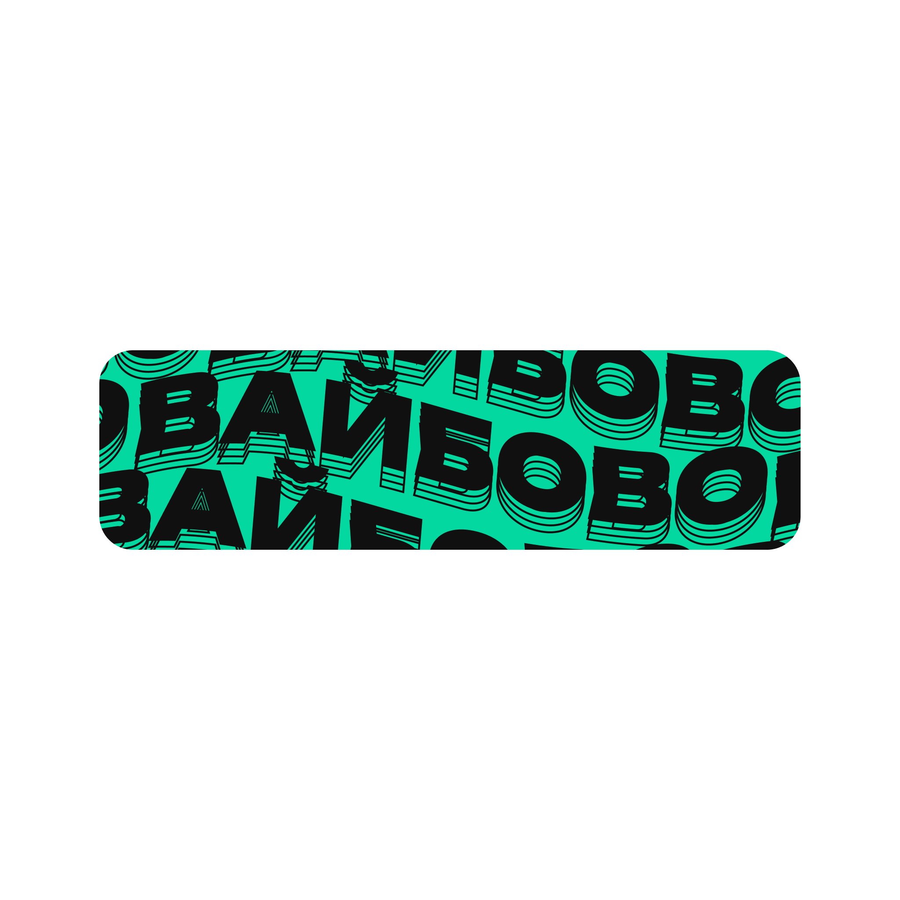
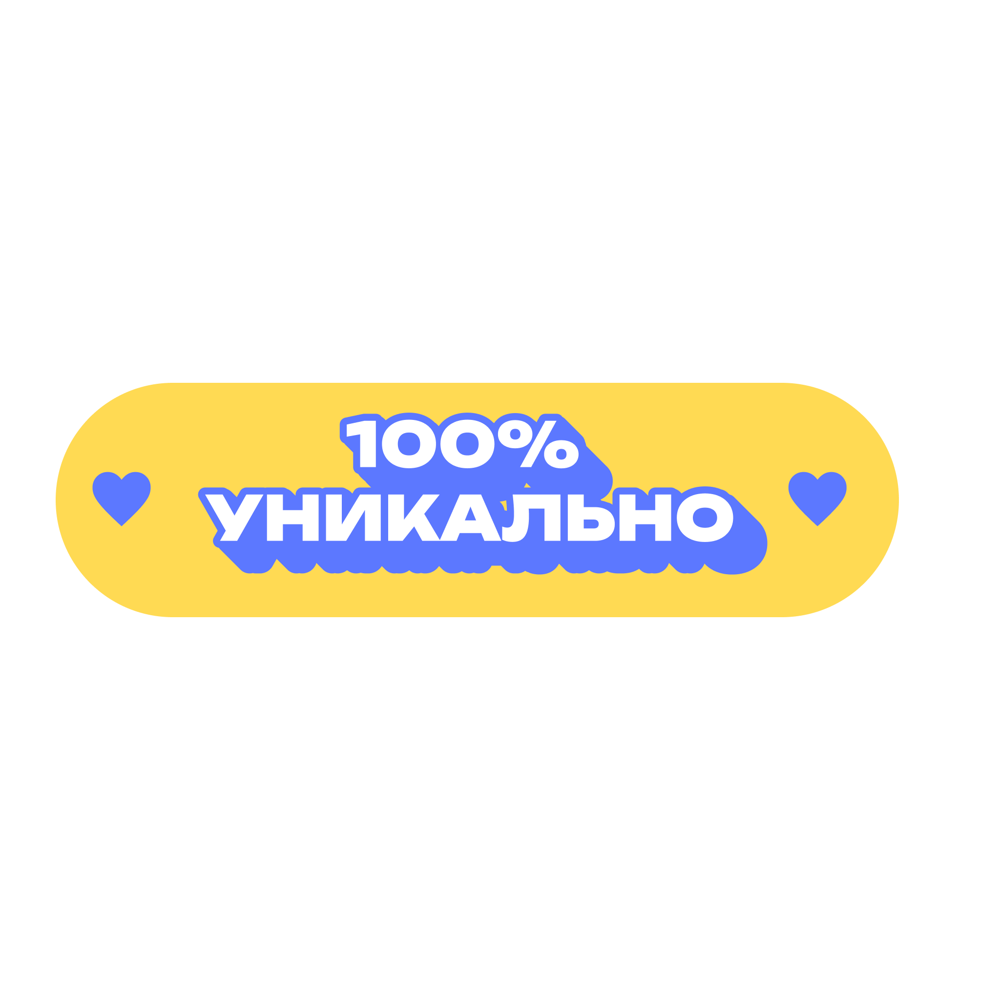
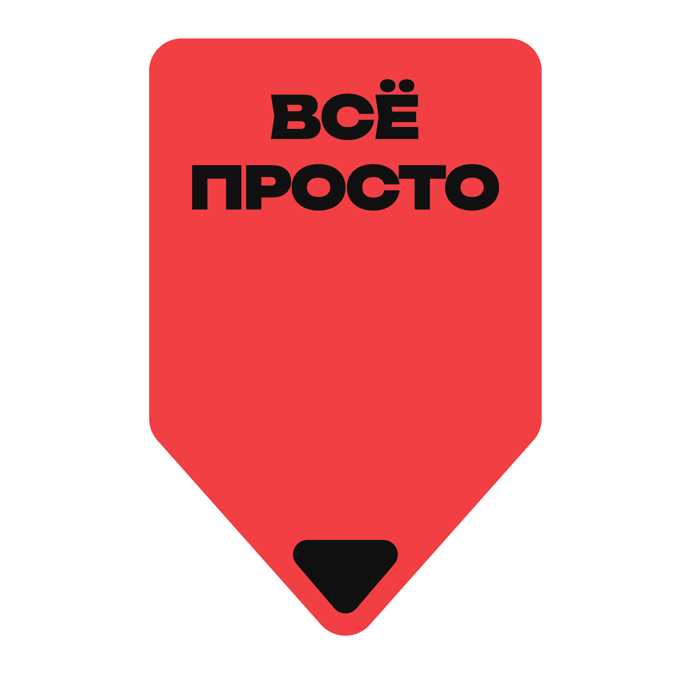
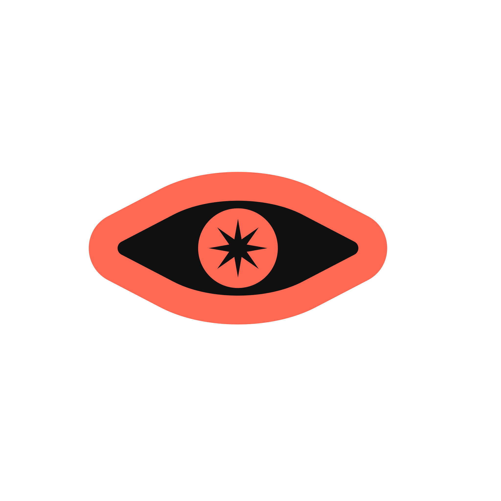
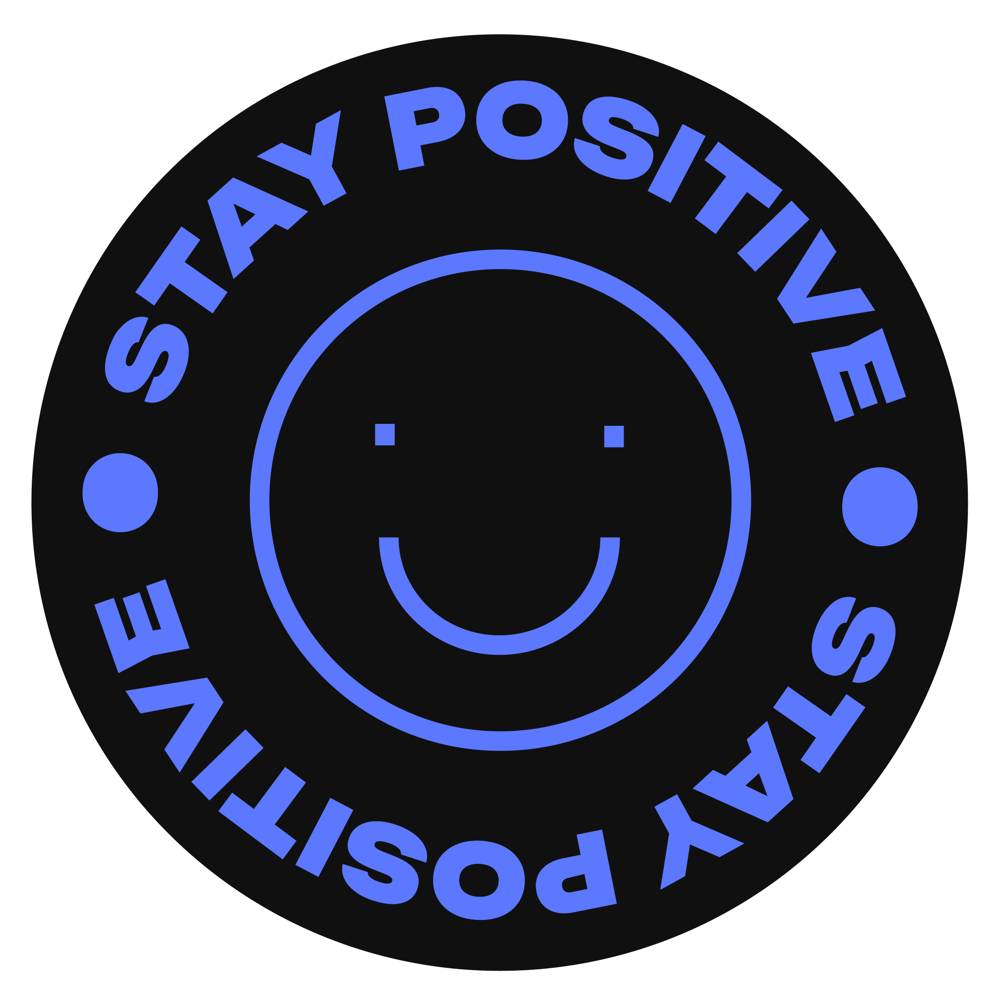
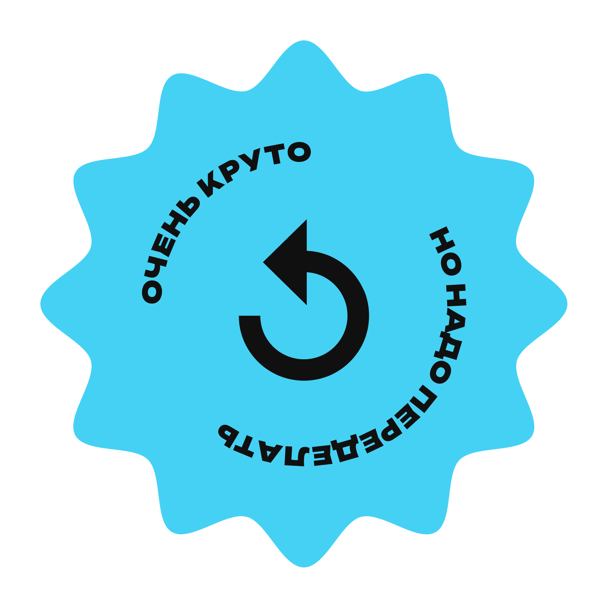
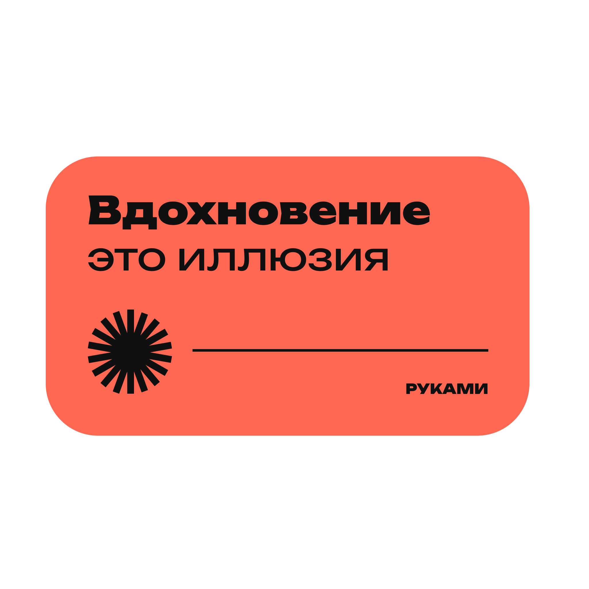
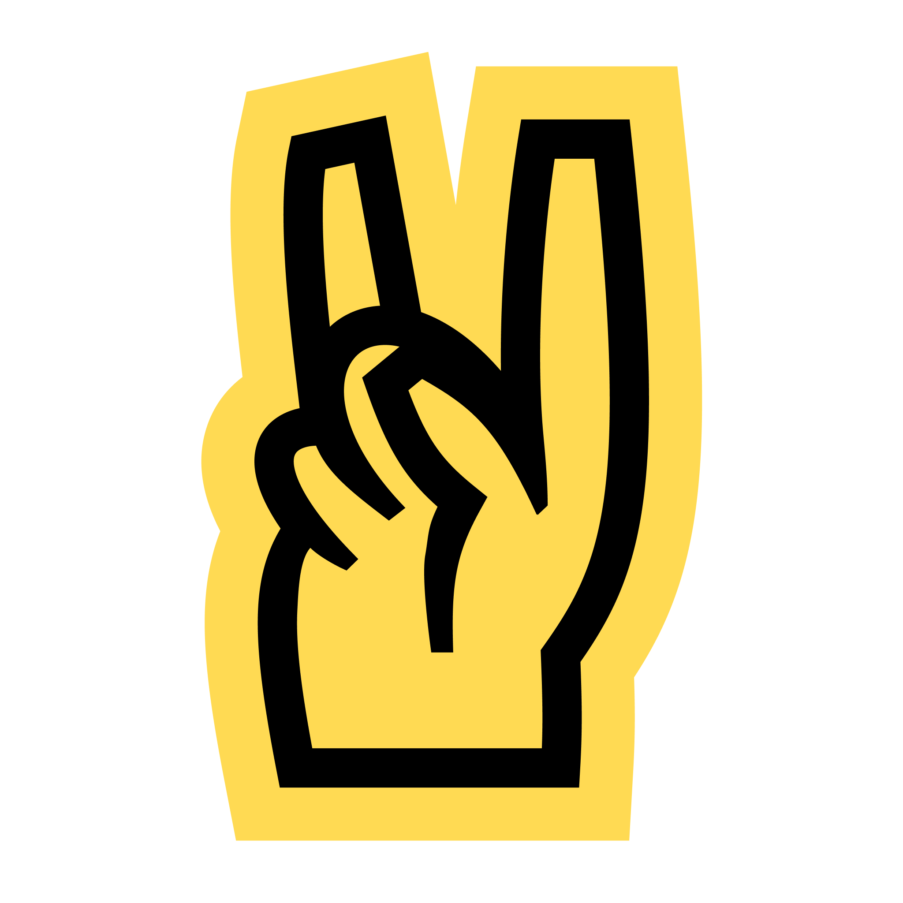
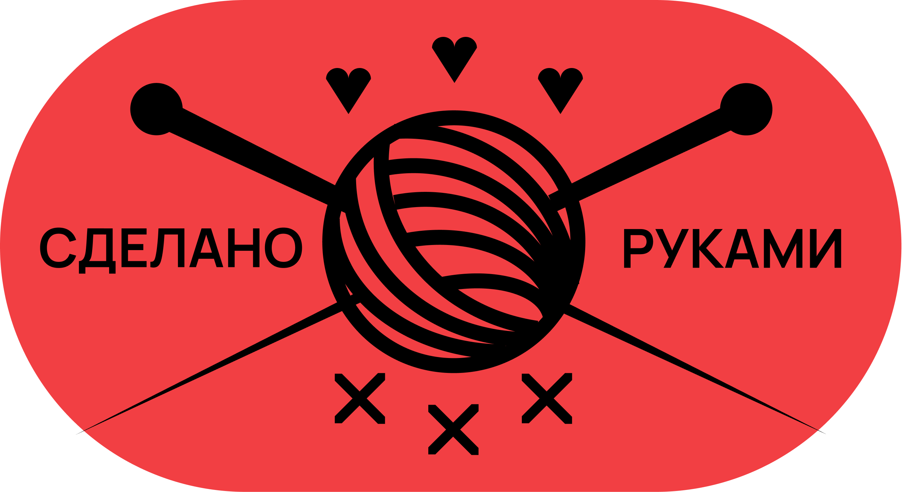

01
Приходишь
Заходишь на маркет и сразу попадаешь в живую среду авторов.
Руками маркет — место, где мастера из Новосибирска собираются вместе и продают товары, сделанные своими руками. Для посетителей это душевное место для общения, вдохновения и спокойной прогулки между авторскими столами.
Мастера рядом, истории рядом, выбор спокойный. Можно смотреть, спрашивать и находить подарки, которые не выглядят случайными.
Узнать, как появилась вещь, из чего она сделана и почему именно так.
Материалы, фактуры, упаковка и маленькие решения, которые не видно на витрине.
Подарок или вещь для себя, у которой есть настроение и человек за ней.
На маркете можно пройтись между столами, рассмотреть товары, задать вопросы авторам и выбрать вещь, которая подходит именно тебе.
Заходишь на маркет и сразу попадаешь в живую среду авторов.
Спокойно осматриваешь столы, материалы, упаковку и детали.
Можно поговорить с мастерами и узнать историю каждой вещи.
Находишь товар под свой вкус, цвет, настроение или подарок.
Забираешь с собой не просто покупку, а маленькую авторскую историю.
На главной показываем часть участников, чтобы не превращать страницу в каталог на 50+ карточек. Полный список будет на отдельной странице.
Небольшие предметы, детали для дома и странные полезные штуки, которые хочется вертеть в руках.
Подробнее →Мыло маленькими партиями: спокойные запахи, аккуратная форма и упаковка без лишнего шума.
Подробнее →Предметы для рабочего стола и дома: простые формы, честные материалы и немного инженерного характера.
Подробнее →Чашки, тарелки и небольшие формы с живой неровностью: каждая вещь чуть-чуть единственная.
Подробнее →Декоративные штуки для полок, стен и подарков: фактуры, бумага, ткань и немного театра.
Подробнее →Свечи в маленьких сериях: мягкий свет, теплые запахи и баночки, которые не хочется прятать.
Подробнее →Добавим точный адрес, схему прохода и быстрые кнопки для открытия маршрута в 2ГИС и Яндекс Картах.
Сохрани страницу — ближе к мероприятию добавим точную точку, время работы и удобный маршрут.
Заполни форму — мы свяжемся с тобой и добавим в список участников.








